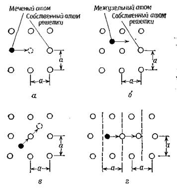
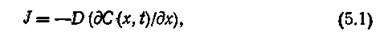
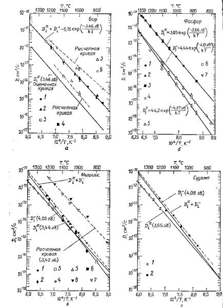
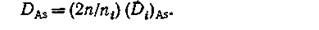
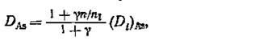
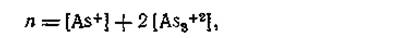
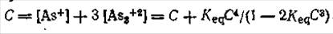
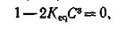
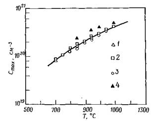

электронный
ресурс по учебной дисциплине 1-58 01 01 - "ИНЖЕНЕРНО-ПСИХОЛОГИЧЕСКОЕ ОБЕСПЕЧЕНИЕ ИНФОРМАЦИОННЫХ ТЕХНОЛОГИЙ"
|
||
| Оглавление | Программа | Теория | Практика | Контроль знаний | Об авторах | ||
|
Практика
ЛАБОРАТОРНАЯ РАБОТА №7 Исследование процессов диффузии Цель работы: Изучить основные характеристики процесса диффузии. Определить поверхностную концентрацию электрически активного мышьяка. Написать программу и построить зависимости выходных параметров от входных. Теоретические сведения Диффузия — процесс взаимного проникновения молекул или атомов одного вещества между молекулами или атомами другого, приводящий к самопроизвольному выравниванию их концентраций по всему занимаемому объёму. В некоторых ситуациях одно из веществ уже имеет выравненную концентрацию и говорят о диффузии одного вещества в другом. При этом перенос вещества происходит из области с высокой концентрацией в область с низкой концентрацией (вдоль вектора градиента концентрации). Примером диффузии может служить перемешивание газов (например, распространение запахов) или жидкостей (если в воду капнуть чернил, то жидкость через некоторое время станет равномерно окрашенной). Другой пример связан с твёрдым телом: атомы соприкасающихся металлов перемешиваются на границе соприкосновения. Важную роль диффузия частиц играет в физике плазмы. Модели диффузии в твердом теле. В объеме монокристаллического твердого тела при высоких температурах возникают точечные дефекты, такие, как вакансии и межузельные атомы. В тех случаях, когда существует градиент концентрации собственных или примесных атомов, наличие точечных дефектов оказывает влияние на перемещение атомов, т. е. на их диффузию. Диффузия в твердом теле может быть представлена как движение атомов диффузанта в кристаллической решетке за счет вакансий или межузельных атомов. На рис. 1 с помощью упрощенной двумерной кристаллической решетки с параметром решетки а схематически показаны основные атомные модели процесса диффузии.  а – вакансионный механизм; б – межузельный механизм, в – механизм непрямого перемещения межузельной конфигурации (эстафетный механизм); г – краудионный механизм Рисунок 1 – Модели атомных механизмов диффузии для двумерной решетки (а – постоянная решетки) Собственные атомы, занимающие при низкой температуре узлы решетки, представлены светлыми кругами. Темные круги обозначают либо собственные, либо примесные атомы. При повышенной температуре атомы в узлах решетки колеблются вблизи равновесного положения. Время от времени они приобретают достаточную энергию для того, чтобы удалиться от указанного положения в узле решетки, и становятся межузельными атомами, оставляя в решетке вакансию. Такой механизм диффузии, когда соседний атом, будь то атом примеси или собственный атом кристалла, мигрирует на место вакансии, называется вакансионным (рис. 1,а). Если мигрирующий атом является собственным атомом, то процесс диффузии называют самодиффузией, а если примесным, — примесной диффузией. Эксперименты по самодиффузии обычно проводят путем введения радиоактивных изотопов собственных атомов в кристалл (рис. 1,а). Механизм диффузии, при котором атом переходит из одного положения в другое, не попадая при этом в узлы кристаллической решетки, называется механизмом прямого перемещения атомов по междоузлиям (рис. 5.1, б). Реализация этого механизма наиболее вероятна в случае диффузии атомов малых размеров. Энергия активации, необходимая для диффузии межузельных атомов, ниже энергии активации для диффузии атомов решетки по вакансионному механизму. На рис. 1,в показано движение межузельных атомов, когда в процессе перемещения они вытесняют атом решетки и замещают его; вытесненный атом в свою очередь становится межузельным. Такое перемещение собственных или примесных атомов называют механизмом непрямого перемещения атомов по междоузлиям или эстафетным механизмом. С указанным механизмом непосредственно связан и краудионный механизм, при котором межузельный атом, расположенный посередине между двумя узлами решетки, перемещается к одному из них, смещая при этом атом, расположенный в узле. Вытесненный атом становится межузельным и занимает промежуточное положение в решетке (рис. 1,г). С помощью методов статистической термодинамики можно оценить необходимую энергию активации для образования точечных дефектов в каждом кристалле и определить их концентрацию, что может дать возможность разработать модель диффузии в этом кристалле. Затем полученные теоретические результаты можно сравнить с экспериментальными данными. Установлено, например, что в кремнии диффузия примесей элементов III и V групп периодической системы происходит в основном по вакансионному механизму. Элементы I и VIII групп, имеющие малый ионный радиус, относятся к быстродиффундирующим примесям в кремнии. Предполагается, что их диффузия происходит по механизму прямого перемещения атомов но междоузлиям. Однако эти простые атомные механизмы не являются адекватными для описания процессов диффузии в тех случаях, когда концентрация примеси достаточно высока, кристалл содержит дислокации или в решетке присутствуют другие примеси с высокой концентрацией. При низкой концентрации примеси и низкой плотности дислокаций процесс диффузии может быть описан феноменологической теорией диффузии с использованием закона диффузии Фика с постоянным значением коэффициента диффузии. Математические выражения, отражающие процесс диффузии, получают путем решения уравнения диффузии Фика. При этом коэффициенты диффузии различных элементов определяют для разных температур. В случае высокой концентрации примеси концентрационная зависимость коэффициентов диффузии связана с предполагаемым механизмом или механизмами диффузионных процессов на атомном уровне. Одномерное уравнение диффузии Фика. В 1855 г. Фик предложил теорию диффузии. В основу этой теории положена аналогия между процессами переноса в жидких растворах и тепла за счет теплопроводности. Фик предположил, что в разбавленных жидких или газообразных растворах в отсутствие конвекции перенос атомов через площадку единичной площади при одномерном направлении потока может быть описан следующим уравнением:  где J — скорость переноса растворенного вещества через сечение единичной площади, или диффузионный, поток; С — концентрация растворенного вещества, которая, как предполагается, зависит только от х и t. х — ось координат, совпадающая с направлением потока вещества; t и D — соответственно время и коэффициент диффузии. Уравнение (1) показывает, что локальная скорость переноса растворенного вещества (локальная скорость диффузии) через сечение единичной площади за единицу времени пропорциональна градиенту концентрации растворенного вещества, а в качестве коэффициента пропорциональности выступает коэффициент диффузии растворенного вещества. Знак минус в правой части уравнения (1) означает, что процесс переноса вещества происходит в направлении уменьшения концентрации растворенного вещества (т. е. градиент отрицательный). Уравнение (1) называют первым законом Фика. Коэффициенты диффузии элементов В, Р, As и Sb. В технологии формирования СБИС в качестве легирующих элементов для создания р-n переходов используют бор, фосфор, мышьяк и иногда сурьму. Поэтому коэффициенты диффузии этих элементов в кремнии представляют особый интерес. Мы укажем здесь как собственные, так и примесные коэффициенты диффузии. Используя вакансионно-примесную диффузионную модель с учетом многозарядовых состояний, можно приблизительно определить группу точечных дефектов, оказывающих влияние на значение коэффициента диффузии. Так как диффузионная теория еще находится в состоянии развития, экспериментально идентифицировать эти группы еще не удалось. Кроме того, будет обсуждено влияние различных эффектов на протекание процесса диффузии при высоком уровне концентрации примеси и взаимодействии примесных атомов. Процесс диффузии в собственный кремний при низкой концентрации примеси. В табл. 1 приведены собственные коэффициенты диффузии для бора, фосфора, мышьяка и сурьмы в виде константы диффузии D0 и энергии активации Е. Таблица 1 – Собственные коэффициенты диффузии элементов B, P, As и Sb
В соответствии с вакансионной моделью, учитывающей многозарядное состояние вакансий, собственный коэффициент диффузии бора в основном определяется взаимодействием бора с вакансией донорного типа F+ и обозначается как (Di+)B. Для фосфора собственный коэффициент диффузии определяется взаимодействием примесных атомов с нейтральными вакансиями Vх и обозначается как (Dix)P. Для мышьяка в табл. 1 приведены три набора величин Do и Е. Так как каждый набор данных представляет величины, полученные при разных экспериментальных условиях, и все они лежат в пределах разброса результатов измерений, мы не отдали предпочтение какому-либо из них. Величины D* в табл. 1 соответствуют коэффициентам диффузии в примесном кремнии: (Di)в для бора, (Di)р для фосфора и т. д.  а – бор: 1, 2, 3, 4 – данные по диффузии в собственном кремнии; 5 – данные по диффузии в кремнии с проводимостью n-типа, легированном до уровня 1,5*1023 см-3; 6 – данные по диффузии в кремнии с проводимостью р-типа, легированном до уровня 5*1010 см-3; б – фосфор: 1, 2, 3 – данные по диффузии в собственном кремнии; 4, 5, 6 – данные по диффузии при высокой концентрации фосфора; 7 – данные по диффузии в примесном кремнии; в – мышьяк: 1, 2, 3, 4, 5, 6 – данные по диффузии в собственном кремнии; 7, 8 – данные по диффузии в примесном кремнии; г – сурьма: 1 – данные по диффузии в собственном кремнии; 2 – данные по диффузии в примесном кремнии Рисунок 2 – Зависимость собственного коэффициента диффузии от температуры На рис. 2, а—г представлены зависимости коэффициентов диффузии бора, фосфора, мышьяка и сурьмы от температуры. Более детальное описание экспериментальных данных, на основе которых построены некоторые представленные на рис. 2 зависимости, содержится в работе. Влияние высокого уровня концентрации примеси на коэффициент диффузии. В настоящем разделе кратко рассматриваются особенности протекания процессов диффузии мышьяка, бора и фосфора при высоком уровне их концентрации, т. е. когда поверхностная концентрация выше щ. Приводятся выражения для коэффициентов диффузии, которые получены из диффузионной модели, учитывающей взаимодействие атомов примеси с точечными дефектами. При рассмотрении диффузии мышьяка в условиях высокой концентрации примеси мы обсудим модель, учитывающую формирование кластеров примесных атомов. Эта модель позволяет ответить на вопрос, почему только часть продиффундировавших атомов мышьяка электрически активна при комнатной температуре. Аналогичные результаты наблюдаются для диффузионных слоев бора при высоком уровне концентрации примеси. Также приводятся результаты, связанные с построением теоретической модели диффузии фосфора. Мышьяк. В соответствии с моделью взаимодействия примеси с точечными дефектами с различной степенью ионизации последних коэффициент диффузии мышьяка Может быть записан в следующем виде:
 2 В уравнении (5.8) коэффициент 2 учитывает влияние электрического поля. Аналогичное выражение, принимающее во внимание взаимодействие заряженной вакансии с мышьяком, имеет вид
> 3 где γ~100 при диффузии донорной примеси. Таким образом, значение коэффициента DAs, полученное согласно уравнению (1), почти в два раза превышает значение того же коэффициента из уравнения (2). Электрическая активность мышьяка в ионно-имплантированных образцах зависит от дозы имплантированных ионов и температуры отжига или диффузии. При дозе ионно-имплантированных атомов мышьяка ниже 1*1016 см-2 и температуре диффузии выше 1000°С почти все атомы мышьяка ионизированы и вносят свой вклад в электрическую активность. Однако в тех случаях, когда температура диффузии ниже 1000°С, а доза имплантированных атомов мышьяка выше 1016 см-2, концентрация ионизированных атомов мышьяка составляет лишь часть общего количества атомов, а при снижении температуры Диффузии ниже 900 °С доля ионизированных атомов еще более уменьшается. Разница между числом ионизированных и общим числом атомов мышьяка может быть объяснена с помощью кластерной модели атомов мышьяка в кремнии. Согласно этой модели, атомы мышьяка в тех случаях, когда их концентрация превышает 1020 см-3, образуют частично активные кластеры. В соответствии с наиболее современной моделью кластер состоит из трех атомов мышьяка и одного электрона, которые электрически активны при температуре диффузии (или отжига) и электрически нейтральны при комнатной температуре. Эту модель можно выразить в следующем виде: 3 Применив закон действия масс для высокотемпературной области, константу равновесия можно записать как
4 а концентрацию носителей при температуре отжига или диффузии как
 5 где [As+] — концентрация носителей, обусловленная отдельными атомами мышьяка, a 2[As3+2]—концентрация носителей, связанная е кластерами [As3+2] при высокой температуре. При комнатной температуре кластер [As3+2] электрически нейтрален и концентрация носителей составляет [As+]=C. Таким образом, общее число атомов мышьяка может быть выражено в виде суммы отдельных атомов мышьяка [As+] и атомов мышьяка, входящих в кластеры, с учетом того, что на один кластер приходятся три атома мышьяка:  6 Второй член в правой части уравнения (5) может быть получен из уравнений (4) и (5). Положив
 определяют максимальную величину концентрации электрически активного мышьяка: 7 Была получена и более общая модель для формирования кластеров атомов мышьяка. С помощью этой модели рассматривают взаимодействие т атомов мышьяка с k электронами и анализируют все возможные ситуации. Выводы подтверждают рассмотренную ранее модель, которая описывается уравнением (3), когда три атома мышьяка и один электрон образуют кластер при высоком уровне концентрации мышьяка. Согласно, выражение для Смаkc можно записать в виде 8 Уравнения (7) и (8) приводят к сравнимым результатам при температуре выше 900 °С, однако при более низкой температуре уравнение (8) дает лучшее соотношение с экспериментальными данными. На рис. 3 приведена зависимость максимальной концентрации носителей Смакс от температуры отжига или диффузии при высоком уровне концентрации атомов мышьяка. Как можно видеть, экспериментальные результаты хорошо согласуются с теоретической моделью. > 1, 2, 3, 4 – экспериментальные данные. Кривая соответствует уравнению (5.15) Рисунок 3 – Температурная зависимость максимальной концентрации носителей заряда при легировании кремния мышьяком При температуре ниже 1000°С коэффициент диффузии кластеров мышьяка очень мал. Задание для выполнения лабораторной работы Подложки кремния p-типа проводимости с ориентацией (100), легированные до уровня X см-3, подвергались ионной имплантации мышьяка с ионной дозой Y см-2 при энергии ионов Z кэВ и последующей диффузии при температуре Т °С в течение 30 мин в атмосфере азота. Определите поверхностную концентрацию электрически активного мышьяка. Варианты заданий:
Порядок выполнения работы 1. Напишите программу, обеспечивающую решение задачи. 2. Постройте зависимости выходных параметров от входных. 3. Оформите отчет и защитите лабораторную работу. Содержание отчета 1. Цель работы. 2. Краткие теоретические сведения. 3. Решение задачи. 4. Код программы и скриншоты рабочих окон. 5. Зависимости выходных параметров от выходных. 6. Выводы по работе. Контрольные вопросы Что такое диффузия? 1. Какие модели диффузии в твердом теле существуют? 2. Опишите вакансионный механизм диффзии? 3. Опишите межузельный механизм диффузии? 4. Опишите механизм непрямого перемещения межузельной конфигурации (эстафетный механизм) диффузии. 5. Опишите краудионный механизм диффузии. 6. Какие параметры влияют на процесс диффузии? Практика
| |||||||
| (С) БГУИР |